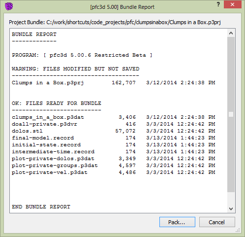

打包报告


图 1：打包报告对话框。单击可在新窗口中放大。
当使用 或 时，会显示此对话框。无论哪种情况，它都会列出本次操作中所包含的文件。打包文件中的所有文件都会按以下五个类别之一进行报告（但请注意，如果某个类别中没有文件，则该类别不会显示）：
- 错误：无法定位文件（链接失效）
- 本节中列出的文件已在项目中进行跟踪，但无法在项目所存储的路径上找到。这些文件将不会包含在打包文件中。
- 警告：文件已修改但未保存
- 本节中列出的文件已被更改，但尚未保存。
- 警告：项目项已发生变化，可能不再与其关联的模型状态匹配
- 本节中的某个文件已被更改，因此与之关联的模型状态可能无法再被准确重现。
- 警告：源文件存储在可能难以解包的路径中
- 本节中列出的文件位于可能不常见或难以重建的位置。这可能是因为它们位于项目文件所在驱动器之外的某个根驱动器上。当某个文件相对于项目文件存储在非常长的文件夹结构中，因而在解包时可能遇到文件夹深度问题时（取决于用户尝试将打包文件解包到何处），也会报告这种情况。
- 正常：文件已准备好打包
- 这些文件已准备就绪，在“打包”或“解包”操作中都不应造成问题。
注意
在“打包”时，项目文件可能来自多个不同的文件夹，所有路径信息都相对于项目文件的位置进行存储。“解包”操作将尽可能恢复这些路径信息，并为此自动创建所需的文件夹（同样，如果可能的话）。
打包疑难解答
由于命令流的复杂性，有时几乎无法消除错误和警告类别中报告的所有问题。不过，在“打包”时尽可能多地消除这些错误/警告是最佳做法。为此，请记下对话框中显示的信息，取消该对话框，然后根据情况尝试以下任一操作：
- 保存项目。这应能消除“文件已修改但未保存”错误。
- 对于失效链接，请尽可能替换文件。如果你确信自己拥有“链接失效”组中列出的某个文件、且该文件是所涉及文件的完全相同的副本，可以将其恢复到所报告的路径，以修复该文件的问题。
- 根据需要重新运行所有项目数据文件，以重新创建全部模型状态（SAV 文件），完成后立即保存项目，然后再进行打包。这可能是消除“项目项已发生变化，可能不再匹配……”警告的唯一手段。此类问题很可能最难解决。
解包疑难解答
由于“解包”时的打包报告与“打包”时显示的完全相同，进行解包的用户可以利用它来尝试修复报告中的问题。应考虑以下几点：
- 原本位于“源文件存储在可能难以解包的路径中”类别的文件仍会包含在打包文件中。但是，如果它们在“打包”时属于该组，那么在“解包”时会被放入一个位于项目文件旁边的名为“位置错乱文件”的文件夹中。此时，用户可以尝试手动重建所需的目录结构，使这些文件恢复可用。
- 仍处于“项目项已发生变化，可能不再匹配”类别的文件无法保证能忠实重现源于它们的任何模型数据。如有可能，用户应联系打包文件的创建者讨论这些项目项。如果重新运行项目是可行的（如上一节所述），这可能是唯一的解决办法。
有关打包文件及其用途的一般性说明，请参见“打包文件（Bundle Files）”主题。
| 这些内容对您有帮助吗？… | FLAC3D © 2019, Itasca | 原文更新于 2020 年 10 月 8 日 |